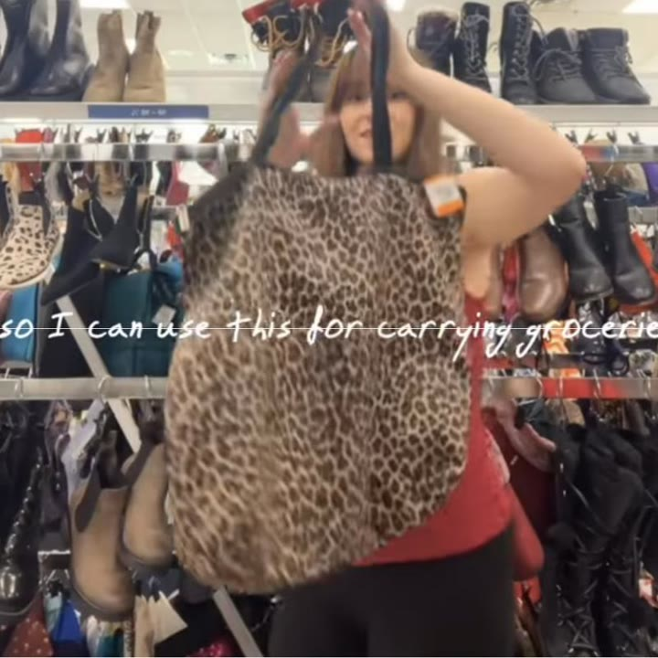
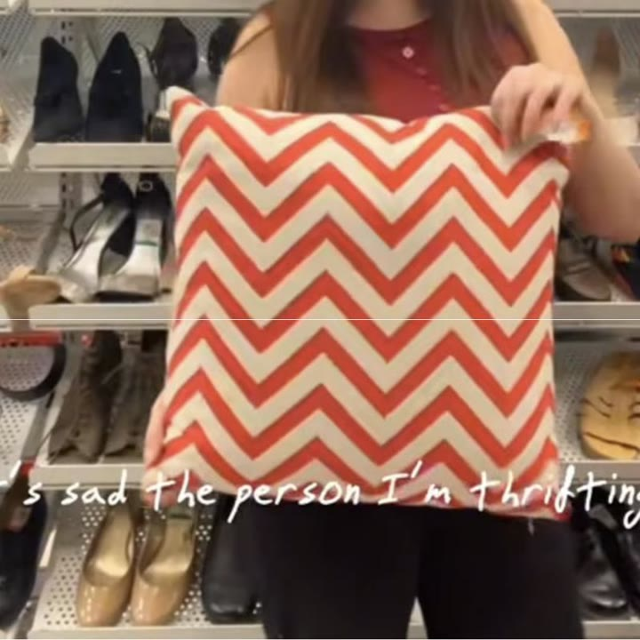
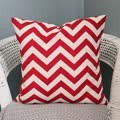
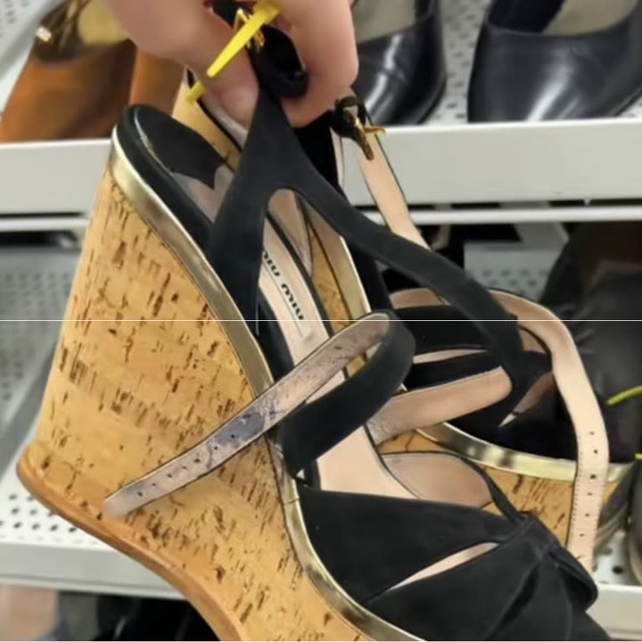
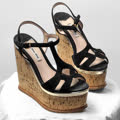
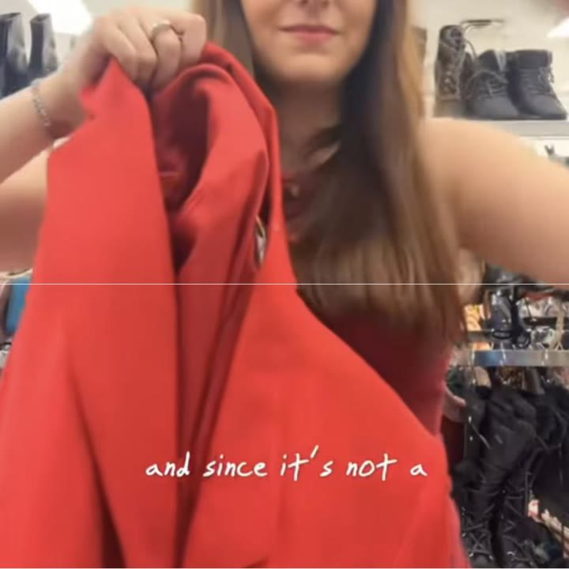

Vintage LeSportsac oversized cheetah print bag
Found on the floor. $3.99, then $1 in savings at the cash.
 Similar on eBay →C$42.51
Similar on eBay →C$42.51Three thrift trips from this week in one video. I found Miu Miu platform sandals for $18.99 and left them for someone else, tried on an American Gods crew jacket, and passed on Anne Klein, Ambush and BCBG. What came home: black and red Chanel-style heels for $30 and a vintage LeSportsac cheetah bag for $2.99.
Thrifted pieces are one of a kind, so these are the closest matches I could find, resale and new. Some links are affiliate links, and I may earn a small commission at no cost to you.

Found on the floor. $3.99, then $1 in savings at the cash.
Similar on eBay →C$42.51
The person I'm thrifting with found two of these.

Similar on Etsy →C$18.00
I was literally shaking. If they weren't Miu Miu, I wouldn't have picked them up.

Similar on eBay →C$282.06
A Canadian brand that makes really high quality pieces, including great suiting.
 Similar on eBay →C$41.20
Similar on eBay →C$41.20I have a budget of $163 left to thrift for fall. Welcome back to my budget thrifting series. We are going to try and thrift everything I want for fall on a budget of $200. So far for this challenge we have spent $45, and with that $45 we've gotten this adorable vintage long sleeve cheetah print top and flared super low rise jeans with a beaded belt on them.
Today there are going to be two things we are looking for at the thrift store. The first is a cropped trench coat type of thing. The second item we're looking for is an antique or old, or really any type of, working painting stand. Now let's go to the thrift store and see what we can find.
Our first find is not an art easel but an art palette. Let's put this in the cart and think about it. Oh my goodness, these are not what we're here for, but they're kind of incredible. These are Jeffrey Campbell. I hope I said that right. Boots, and online these are going for about $150. Unfortunately these are not my size or my style, but I hope that they end up in the perfect home, because someone will love these.
But back to focusing on what we're really here for. This seems to be a cropped trench coat. I'm a little nervous to try this on, because I don't love pieces that hit exactly at natural lines on the body, so like your direct waist, or cropped right at the elbow or right at the knees. I find that's not the most flattering on me, and if we're honest, I feel like this kind of isn't a cropped blazer. Maybe it is.
We're definitely pushing it with the word cropped, but the longer I wear it, the more I like it. So let's put it in the cart and keep looking. So far, though, I think it's good. Remember, so far this is our top pick. Keep it in your mind while we keep looking.
This dress is about to blow your mind. Now, you have to look up close at the pattern. Let me bring it closer. Do you see those hearts on fire? Flaming hearts. This feels like the back of a skateboard, like skateboard art got embroidered onto a dress. I kind of love it.
You know that means we have to try this on. Now, to be honest, I'm not convinced that this is going to fit me, so cross your fingers for me as I turn into a wiggly worm, because I am so obsessed with these strange heart flames on this piece. I've never seen anything like it on a dress like this. I'm trying to figure out, should I put it over my head or should I try and step into this dress? What is more likely to work?
Okay, we're going in. This is actually the best angle to see the hearts, which is pretty funny. At this point I'm thinking, oh, not only does it not fit, but I am truly stuck. But the thrift gods sent us a miracle and it fit. I have no idea what to think of it. It's kind of incredible in an old school Avril Lavigne, from her first album, type of way.
That's who I feel like should have this dress and should be wearing it. And even though I think it's a really, really cool piece, I'm not sure it's something I would realistically wear. But at the same time, I'm enjoying wearing it and I think it's so funny. Unfortunately we are on a budget, and this is just not something I'm going to wear enough, particularly in the fall, so that means it's got to come off.
The vibe is so different with this Tommy shirt dress. I'm unsure which one this is supposed to be. I feel like if you're short enough, it could be a dress.
This might be the piece that I am most excited to try on today. This is an incredible vintage trench coat. Look at the colour, and it is long. One of the things I've been struggling with is finding a trench coat that truly feels long on me. This is from the men's department, which is a great spot to look for trench coats. And oh, I don't know. I think I'm drowning in it, and I look more like someone who's going to work at a lighthouse. Unfortunately this is Shein, and I don't trust their fabric.
Now, before anyone says anything, don't worry, I did wipe these shoes down with alcohol pads. Don't these remind you so much of these Chanel heels? Except these thrift store heels are not $1,300, which is the price of the Chanel ones. I feel like I'm in such a pickle, because I love these, but they're a little bit too big for me. If anyone has any suggestions on how to make heels fit, if that's even possible, maybe I'll go get them tomorrow.
Look at these. These are adorable. I just don't love it when I can see people's toe marks in shoes, but they are really cute. And Melissa always has the strangest heels. Look at these guys.
Guys, I just picked up the art palette again and realized it's a piggy bank. I don't really need a piggy bank. Whoa, these are very bright. But wait a second, look who I found on the side of these. Hello, mini Lizzie McGuire.
Next up we have a Diesel sweater. It says XXL, but it doesn't look that big, and part of the logo is actually broken off on the front, so I think we're going to pass. Something about this vintage picture with the old frame has my heart. I just think this is gorgeous. Sorry, it's a bit hard to see with the glare.
My favourite area is to check out all these little bags, like these candles. Oh my goodness, my cat would lose her brain for those. What the heck is a beverage can? Is this another piggy bank? Please tell me in the comments if you know what this is.
If I lived in a mid-century home, these could be really cool. They don't match my space, but look at all these pretty wooden coasters, and I really like that the full set was donated. This is pretty cute, but it's just a remake. I wish it was the original. This must have been someone's prom dress. Honestly, it's quite pretty. The colours are really gorgeous.
But here's the twist. The person I'm with found these two gorgeous prints for $4.99 for both of them. They did a bit of research, and these prints are from an artist named Simon Hart, and they were painted around 1977. He makes these kind of whimsical paintings of ports, and it kind of reminds me of Canadian artist Maud Lewis. I think out of the two prints, the one with the little seagulls is my favourite. I really like these, and for $4.99 you couldn't even get the frames for that brand new.
But it is now time for us to look over my cart and make some final difficult decisions. I was like 95% sure that I was going to be buying this coat. It's Anne Klein. It's not totally a cropped jacket, but I think it is in the style, kind of in the realm, and it's something I really do see myself wearing, until I looked at the price tag and almost fell over. This coat is $29.99 plus tax, and even worse, I don't have a coupon with me today.
Do I love this coat enough to take our budget from $157 down to $127? That is a huge hit. Honestly, no. I don't know, you let me know what you think. And I do think that the longer trench coat really is just too baggy on me, so I think that's an instant no.
But unexpectedly, I am madly googling how I could make these heels fit me. These are a nine and I'm an eight and a half, but when I walk there is definitely still a gap. Has anyone actually ever used those shoe filler things behind your heels when a pair of shoes is half a size to a size too big? Do they actually work, and can you actually walk in them? Because I don't know if I'm convinced.
For now we are going to leave these shoes behind, but I'm putting them kind of half hidden on the shelf, so if I think about it today and I just dream about them, then I can come get them right away tomorrow morning. And that mostly depends on figuring out if I could actually make them work or not. Also, the flame dress is so fun, but realistically I have nowhere to wear it, so we are going to leave it behind for someone else to find. Which means that I am actually walking out of the thrift store today with nothing, which is kind of shocking. But the person I was with did get those two adorable prints.
I also have an update on two other pieces from the series. First was the suede skirt. We thrifted the suede skirt, then we thought maybe we could alter it to make it more of a pencil shape, and it ultimately did not work, so that piece was taken back in exchange.
Now, the second piece that we talked about the other day were the super low rise beaded jeans. I think collectively we all decided that someone probably hand beaded these at home, and they're just absolutely beautiful. But unfortunately I cannot get them past my kneecaps, and when I say that I'm not being dramatic. They do not go past my kneecaps. They are just not built for my body, and that is unfortunate, but it is just how things are sometimes.
There are no change rooms in the thrift store here, so yeah, I did try the around-the-neck trick, but of course these jeans are super low rise, so that didn't really turn out how I'd hoped. So here's my question for you: what would you do in this situation? I love the beaded belt. I think it is beautiful, I think it's so unique, someone obviously worked really hard on it, and it's just tacked on by a few little strings.
So I could take it off and put it on a pair of jeans that I already own. Or is that wrong, and kind of breaking what the jeans are, and should they be donated back with the belt on? Please tell me your thoughts on that. I am leaving the store empty-handed, which means we still have a budget of $157 left to thrift this fall.
I have a budget of $163 left of $200 to thrift this fall. Recently we did not thrift these red and black heels. Today we're looking for a chunky oxford, ideally under $20, as well as still hunting for an art easel. Let's go to the thrift store and see what we can find.
I am actually shaking holding this find. These are platform Miu Miu sandals for $18, and from my research I think these are from the 2015 spring/summer collection, which would mean they would retail for almost $1,000 Canadian around 11 years ago. But let's inspect closer to see if we think they're real.
To start our inspection in the thrift store, the first thing we're going to look at is the tag on the inside of the shoe, and we're not only looking at the logo, but at the stitching above and below the logo. Does the stitching match the shoe, and is the thread colour correct? Now let's inspect the bottom of the shoe. We like that the logo is on the shoe and looks clean. Normally I'd like to look closely at the Made in Italy, but it's super worn off, which is also okay. It's an 11-year-old shoe.
Now, the overall construction. These shoes are in fantastic shape for being 11 years old. They feel very solid and well assembled, and they're a fairly unique piece. I'm searching online to see if there are dupes, but sometimes when pieces have this complex a design, it's not as easy to do. So for $18.99, I'm thinking these could be real, and they are definitely worth putting in our cart and thinking about as we keep shopping.
Because holy moly, take a look at this. They kind of look like mini bronze spoons. It's got the tags on and it's priced under $20. So will I be finding a jacket to wear to parties in the winter, or will I end up giving Abominable Snowman, specifically the one named Bumble? Oh my goodness, I convinced myself to try this on just in case it could be magical, because you never know. It really does look like I'm a dish drainer with a bunch of little spoons hanging off of me. But the actual white jacket is kind of cool, so I thought, what if I remove the spoon-like little things? And the funny thing is, I actually like what they were trying to do. It's just the fabric of the spoon things doesn't work for me.
We've gone from winter to summer. This vintage top and/or dress: I'm never sure where these types of pieces are supposed to hit on my body. I'm about 5'9". But honestly, I put this over my head and off so fast. That tends to be my gut reaction to knowing that something probably isn't for me, even if it's pretty.
Now this is funny. This is a stunt jacket from the television show American Gods, and I have a personal connection to American Gods. I worked as a production assistant on one of their shoot days, maybe even two or three. Shout out to Jordan for hiring me, thank you. But I only worked a few days on season one. This is from season two. Typically when a show wraps, they give out crew gifts, so this must have been the crew gift for season two, specifically for a person with the initials JFH in the stunts department. Shout out to that person for donating their stuff. That's awesome. Even though this is a really cool jacket, stunts is not my department, so I think I'm going to say no to this one.
Next we have a vintage Victoria's Secret faux silk style house gown. Fun fact: I actually worked as a cashier at Victoria's Secret in high school, in the Eaton Centre in Toronto, much to my parents' horror. I don't know if I love the colour. It's a bit of a muted green, but I will say these older Victoria's Secret pieces tend to last quite a long time, so it's definitely worth a shot trying on. And it's fine. I don't think it's outstanding, and I struggle with the lengths of these things, but I do like the detailing on the arm, and it is $9. So let's put it in our cart and think about it, because it might just be nice to have to put on and get around the house.
Next, if you're Canadian, you're going to know what this brand is. This is a vintage Holt Renfrew dress. For American friends, Holt Renfrew is like a Saks Fifth Avenue type store in Canada. But judging by my initial reaction, I don't think I'm a huge fan of this dress. I actually think I would have really liked this dress in high school, but it's just a bit too short, and the waistline isn't really my style anymore.
I wonder if this logo is going to be a bit too aggressively loud for me, but I love the idea of a red button-down shirt. I'm going to try and be open-minded to the logo. I'm not a huge logo person in general. Oh, whatever I thought this was going to give, it is not. I actually look like I work at some sort of food inspection plant, maybe a ketchup plant. Either way, this does not suit my personal style, even though it's a nice shirt, so I'm going to leave this behind for someone else to thrift.
I was pretty excited about this skirt, but the fabric is so thick and heavy, which I know is something most people love, but for me it's actually a downside. I really don't like wearing heavy clothes. Very cute Ralph Lauren belt buckle. I wonder if they also donated the shirt. What is this? Is this a super pretty jewellery box, or is it ugly? Let's see the inside. Oh, unfortunately it's missing some stones on top, so I think that answers it for us.
Now I'm stumped as to what these are for. Are these for napkins? The person I was with said that they were not for napkins, but they weren't sure either. They said that they're for toast. Is it toast or is it napkins? Either way, I don't need it. I love the portrait of the little lady, but I don't love the shape of the clock. The photos of people's pets always tug at my heart. Look at these three. I'm sure they were very loved.
The Melissa jelly heels are still here from yesterday. But guess what else is still here: these freaking shoes I can't stop thinking about. But they want $30. Okay, let's add them to our cart and look over everything. I love the white fluff, but I don't love the gold accents, so let's say it's a pass. And I just don't think the cut of this shirt is right for me, or the large logo. I gave the vintage dress a second look, but I trust my gut, and this is a no.
This Victoria's Secret robe is the second hardest decision, because I do like it and I need one, like a house coat, but I think I can buy one in a better colour. But now the hardest decision of them all: the Miu Miu shoes.
Now, something I try really hard to do is not be blinded by brands. When I first picked up these shoes, I was literally shaking to find Miu Miu for $18. So here's my trick. I need to look at these shoes as if they are not Miu Miu. I need to think that they are basically Forever 21, and decide: if these shoes were from Forever 21, this specific style, with the cork, with the velvet, with the gold, would I buy these, and would they match my wardrobe?
And my honest answer is, if these were not Miu Miu, I don't think I would have even picked these up off the rack, because they don't match my wardrobe, they don't match my style, and frankly we are here looking for a fall heel, which we didn't find any of today, which is kind of funny. And these are extremely summer. I have a pair of MCM Worldwide platforms that are like this that I really love. I thrifted these back in 2022 for nine bucks. An example of a platform style that is just a bit more aligned with my other clothing options.
So I think the thrift gods left these Miu Miu shoes for $18 for someone else, which means that I'm going to leave these Miu Miu platforms behind, because the thrift gods already blessed me with a pair of platform designer heels that I really like. And when I come across really expensive brands like Miu Miu at the thrift store, I do try and leave them behind for other people if I really don't think I'm going to wear them, and just not buy it for the brand, because it's so fun to find designer, and I want to make sure other people have that experience too.
So please don't hate me for leaving the $18 Miu Mius behind. I promise I will check in on them to make sure they find a good home. If they're still at the store by the time that they're supposed to be tossed, or given to whatever type of next stage of life they'd go to, I will get them and do a giveaway. But for now, let's leave them to see if someone else wants them.
But wait, it's not over, because these shoes: I first found them two weeks ago. I tried them on the other day. They're a little bit big, but you guys gave me such excellent tips about how to make these heels fit, since they're only half a size too big. And even though they're $30, which is actually hilarious, that they are more expensive than the Miu Mius, truly only at the thrift store are these shoes more expensive than Miu Mius. I like them so much that I'm going to bite the bullet and buy them for $30.
And even worse, I do not have a coupon today, so these heels are going to be my most expensive purchase so far. But I think the colouring is so unique, and it is the closest that I'm going to find to a dupe of the Matthieu Blazy Chanel. We will have a budget of $133 left to thrift for fall.
Now, also, these videos are substantially longer than normal. Usually my videos are between one and three minutes, and these have been more between like seven and ten minutes, so please tell me if you like these longer videos. They do take quite a bit longer to edit, but I'm really enjoying them. But you guys and what you like always comes first. We are still on the hunt for the art easel, and now a chunky pair of oxfords. My dream pair are from this French brand, Jonak. Tell me: did I make the right or wrong decision with the Miu Miu platforms? What would you have done if you found these for $18?
I have a budget of $133 left to thrift this fall. Recently we thrifted these black and red heels for the diabolical price of $30, and today we want to find an oversized animal print bag. Let's go to the thrift store.
Starting strong with the Mango flats. These are priced at $12.99 at the thrift store, and though I do love a ballet flat, I'm not big on gold. I tend to have more silver. So even though these are cute, let's leave them behind for someone else. And if you thought the blue cowboy boots were surprising, boy, do I have a surprise for you, because not only is there blue in a smaller size, there's a matching pink. These would be so good for friends or a couple for Halloween.
But you will not believe what I just found on the floor: a vintage LeSportsac massive cheetah print bag for such a good price. It's only $3.99. Something else caught my eye, so let's put it in our cart and keep shopping. These make me super excited, and I really like the style with the pom poms on the front. These are also in pretty good shape, and I wonder how old they are, but unfortunately I did try them on and they do not fit me.
I am so excited to find this. This is a vintage Canadian brand called Mr. Leonard, and they make some really cute, really high quality pieces, including great suiting. And since it's not a hugely recognized brand, I find that the pieces are usually really affordable at the thrift store. So fingers crossed that this is going to be amazing. I am disappointed.
If you think the front of the shirt is fun, wait till you see the back, specifically the sleeves. Oh my goodness, this is wonderful. I love it when manufacturers and designers actually take the fringe all the way down the arm and don't just stop it on the back. Look at that. Those are so cool. I attempted a shimmy. It didn't go too well. This is a great piece. It definitely doesn't belong in my wardrobe, but this is going to be so cool for someone.
This is a tank top from a designer brand called Ambush. I think they're sold on SSENSE, for example. This tank top on Farfetch is $521, which is so much for a top. But I don't love the grey paneling and the yellow text for my wardrobe. I think it's just not my style, so we are going to leave it behind.
But I love a fringe. This is so cute. It shakes so well, and to my great heartbreak, it is definitely not in my size. Oh, but there we go, it can even go hands-free. What can't it do? Such a gorgeous vintage leather pencil skirt. Unfortunately I would have to remove bones to make this fit. I really like the shape of this dress, but I don't love the shade of denim on me, so it's going to be a no.
Now this could have been kind of fun in the summer. This is a vintage baby blue Lacoste, but unfortunately the store did recognize the brand, so it's almost $20, so I am going to say no. I do think it's cute.
Oh my goodness, this is not my personal style, but it could be, and maybe I should try something new. Wait, did it come with this panel missing in the front like that, or is that a DIY? Only one way to find out. I do like that this is kind of an interesting patchwork. It could have been such a cozy shirt just to throw on and do errands, or painting and cleaning around the house, while still having a fun pattern. But I don't think I personally dig the cutouts, because I don't understand their purpose. From the back this is actually pretty cute, so I'm a bit disappointed in the front.
Oh well, onto the next thing we go. Now this is only priced at $15. I think this could be very exciting. I really like that trench coats are making a comeback recently. I found this in the men's section, because I'm looking for a more baggy, oversized look. Pros are, I really like the cutout shape on the back, don't look at my bad haircut, and the buttons are super cool. But I just don't feel a spark with it, I think because the arms are a bit big in the shoulders. I'm not sure if this is one of those pieces that, if I leave it behind, I may regret it, so cross your fingers for me, because I am going to leave it behind.
This is a $108 Gap skirt with the tags on. In general I find Gap to be quite expensive, and even though it has the price tags on, I don't love these silky skirts. I don't find them to be flattering on me. Wow, this is a colour combination you don't see every day, and look at that beautiful orange lining. I could take the shoulder pads out. It's kind of interesting. Or maybe not. Vintage Nike tearaways, except I am too tall for these. That's sad.
The person I'm thrifting with found two of these pillows for eight bucks. They're going to get them. Oh, look at these little mid-century sculptures. I think these are swans. They kind of look like swans to me. What do you think? Oh my goodness, these giant wooden dice are so fun. I think they might be bookends. Realistically they could be used for so many things, except actually playing with them.
I think Halloween thrift store might be my favourite season. Look at these adorable candlesticks, and I found them matching. Darn, this is really cute, but it's $30, so I don't think I dare even try it on, because we just spent $30 the other day. A British cookie jar, very cute. There are a set of these matching cups. I really like how shiny they are. What are these? I feel like they're to carry wine bottles, maybe, but there's so many. There were like 10 of these all around the store today. This mug is so cute. Why does it have a huge logo on it? Speaking of big logos, these two vintage folding chairs are so cute, and they're priced at $5.95 each.
But now it is time to make some decisions. First decision is the $3.99 LeSportsac bag. I think this is so cute, and something I really like about it is that it can roll up super duper small, so I can use this for carrying groceries or traveling with clothes. I think they would let me take this as a personal item on a plane. And there's a twist. It gets even crazier. When I got to the cash to buy this for $3.99, which is already such a good deal because people are selling these online for over $100, I had $1 in savings, which meant instead of $3.99, this bag becomes $2.99. You cannot even get a coffee for that much anymore, and I feel like this is making up for some of the money I spent on this pair of heels, which I still cannot believe cost me $30.
Oh, and I forgot to tell you, I did check if the Miu Miu platforms that we found for $18 were still there, because I think the general consensus in the comments was that they are indeed real. I thought, oh, this could be a really fun giveaway, but I could not find them, so I think someone else bought them. Next are the colourful cowboy boots. I actually really like these. Unfortunately neither of these are in my size.
Also, I forgot to show you, I found this snake print tote bag with this bright pink lining. I like the lining, but I definitely prefer the cheetah print, so I think we're going to leave this behind. I was a little bit on the fence about the Ambush tank, but I think ultimately I don't need it. Plus, it wasn't on our vision board. If the skirt had fit me, it actually would have been a contender today, but it does not. I 100% would have bought this skirt if it was in my size.
I don't think I could style this the way it deserves to be, so I'm leaving this for someone else to thrift. Really good quality, though. I absolutely love this top. It is so fun. It's not for my wardrobe, but it's just fantastic. And on my way out of the store, I also found this vintage BCBG dress. It's quite beautiful. Look at the ruffles. I love that they go on the back, and it has the tags on. Absolutely gorgeous. Unfortunately it was just a bit too big for me, and I don't need it right now.
I texted my friends to see if any of them wanted this dress, but we're all just in fall mode now. And I decided to put the mid-century ducks back in their home. They're pretty cute, though. Which means that all I purchased today was this $2.99 leopard print bag.
Now I want to get serious about Halloween with you for a second. I am thinking of doing a Halloween thrifting series. Would you rather I find the most absurd item that we can find in the thrift store and then have to build a costume around it, or should I do what I normally do, which is go in with the idea for a costume and then try and thrift it on a budget of like $20 to $25? I think it could be kind of fun to switch it up. I'd like to do it for $20, but prices have been inflated quite a bit recently, so I might do $30. Is that just too high?
And once again, this is my new longer format video, and you guys sent the nicest comments, which I so appreciate, because these videos take a little bit more time to edit. Thank you so much for the positive thoughts. I think we're going to continue making these. Overall, that means so far we have spent $70 of our budget for fall already. Remember, you can catch up on all the other episodes so far on this channel. Bee says hi. Talk to you soon.